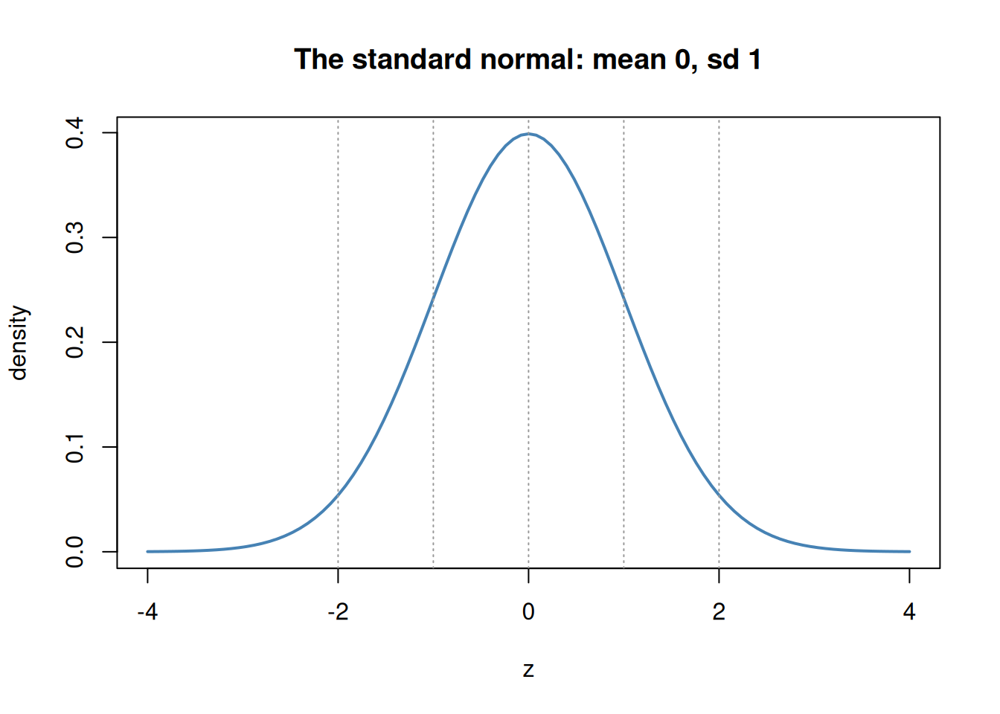
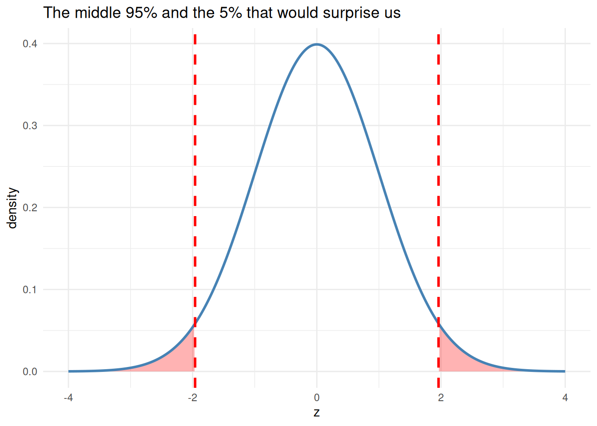

sat <- 1350; sat_mean <- 1050; sat_sd <- 200
act <- 30; act_mean <- 21; act_sd <- 5
z_sat <- (sat - sat_mean) / sat_sd
z_act <- (act - act_mean) / act_sd
c(z_SAT = z_sat, z_ACT = z_act)z_SAT z_ACT
1.5 1.8 Every distribution we have met so far has its own units - inches, dollars, IQ points, reaction times. That makes them impossible to compare directly. The z-distribution is our universal translator: a way to put any value, from any normal distribution, onto one common ruler. Master this one distribution and the entire inferential half of the book opens up, because every test we run is, underneath, a z-in-disguise.
pnorm, qnorm) instead of a dusty z-table.A z-score answers a single question: how many standard deviations is this value from its mean?
\[z = \frac{x - \bar{x}}{s}\]
That is the whole formula. Subtract the mean (now centered at 0), divide by the standard deviation (now measured in SD-units), and every variable on Earth speaks the same language.
sat <- 1350; sat_mean <- 1050; sat_sd <- 200
act <- 30; act_mean <- 21; act_sd <- 5
z_sat <- (sat - sat_mean) / sat_sd
z_act <- (act - act_mean) / act_sd
c(z_SAT = z_sat, z_ACT = z_act)z_SAT z_ACT
1.5 1.8 Is a 1350 SAT better than a 30 ACT? On their own scales, who could say. In z-units the question is trivial: the ACT score is further above its mean, so it is the more impressive result. That is the magic of standardizing - incomparable things become comparable.
Standardize a normal variable and you get the standard normal distribution: a bell curve with mean 0 and standard deviation 1. It never changes, which is exactly why it is useful - we can chart it once and reuse it forever.
curve(dnorm(x), from = -4, to = 4, lwd = 2, col = "steelblue",
main = "The standard normal: mean 0, sd 1", xlab = "z", ylab = "density")
abline(v = c(-2, -1, 0, 1, 2), lty = 3, col = "grey60")
The famous 68–95–99.7 rule lives here: about 68% of values fall between \(z=\pm1\), about 95% between \(z=\pm2\), and about 99.7% between \(z=\pm3\). Anything past \(z = \pm2\) is already unusual; past \(\pm3\), rare.
Older books make you hunt through a printed z-table to convert a z-score into a probability. We have R, so we will never do that. Recall from the distributions chapter that probability is area under the density curve. Two functions give it to you instantly:
pnorm(z) - the area to the left of z (the cumulative probability).qnorm(p) - the inverse: the z-score with area p to its left (a quantile).pnorm(1) # P(Z < 1): area to the left of z = 1[1] 0.84134471 - pnorm(2) # P(Z > 2): the upper tail beyond z = 2[1] 0.02275013pnorm(2) - pnorm(-2) # P(-2 < Z < 2): the middle ~95%[1] 0.9544997qnorm(0.975) # which z cuts off the top 2.5%? (the famous 1.96)[1] 1.959964That last line is worth a star: qnorm(0.975) returns 1.96, the number that shows up in every 95% confidence interval and two-tailed test you will ever run. It is not magic - it is just the z-score with 2.5% of the area beyond it in each tail.
# picture the "unusual" tails beyond +/- 1.96
z <- seq(-4, 4, length.out = 400)
plot(z, dnorm(z), type = "l", lwd = 2, col = "steelblue",
main = "The middle 95% and the 5% that would surprise us",
xlab = "z", ylab = "density")
abline(v = c(-1.96, 1.96), col = "red", lwd = 2, lty = 2)
Turn a z-score into a percentile with pnorm() and you can say exactly where an observation stands in its distribution:
z_height <- (74 - 68) / 4 # a 74-inch person, mean 68, sd 4
percentile <- pnorm(z_height) * 100
c(z = z_height, percentile = percentile) z percentile
1.50000 93.31928 A z of 1.5 places this person around the 93rd percentile - taller than about 93% of the population. Percentile ranks, growth charts, and standardized-test scores are all pnorm() in another form.
The z-score compares a value to its own sample - to the mean and spread of the data you happened to collect. That is exactly right for asking “how unusual is this person?” But it carries a limitation: because z depends on the sample, the same raw score turns into a different z in a different sample, and z-scores from two different measures are not truly on the same footing.
When the goal is to compare measures - say, is work engagement higher than well-being in this study? - a different ruler is more honest: POMP, the Percent Of Maximum Possible. POMP rescales a score to the range the instrument could produce, from its lowest possible value to its highest:
\[\text{POMP} = 100 \times \frac{X - \text{min}}{\text{max} - \text{min}}\]
A POMP of 0 is the lowest possible score, 100 the highest, and 50 the exact middle of the scale. Crucially, that meaning does not depend on the sample. Two measures with completely different response formats - a 1–5 scale and a 1–7 scale - both land on a common 0–100 scale you can read and compare at a glance:
mood <- 4 # answered on a 1-5 scale
vitality <- 5 # answered on a 1-7 scale
pomp <- function(x, lo, hi) 100 * (x - lo) / (hi - lo)
c(mood_POMP = pomp(mood, lo = 1, hi = 5),
vitality_POMP = pomp(vitality, lo = 1, hi = 7)) mood_POMP vitality_POMP
75.00000 66.66667 On their raw scales, 4 and 5 are hard to compare. In POMP units, the mood score sits at 75% of its possible range and vitality at about 67%, so this person is, if anything, in a slightly better mood than their vitality would suggest. This is the standardization we now use in most of our own papers (PEM): it lets a reader compare outcomes across measures directly, and it has a useful side effect - if a scale’s response format changes partway through a study, the shift in POMP makes the problem hard to miss.
Reach for a z-score to ask how unusual is this value within its distribution? - it locates a person relative to their sample. Reach for POMP to ask how high is this score on what the instrument can measure? - it places a score relative to the possible range, so different measures become comparable. Neither is better; they answer different questions.
Everything inferential rests on one move: standardize, then read the area. When we test a hypothesis, we convert our result to a z-like statistic and ask “how far into the tail is this, if nothing were going on?” When we build a confidence interval, we walk out \(\pm 1.96\) standard errors. The z-distribution is not one more topic - it is the shared machinery of the entire inferential section that follows.
pnorm/qnorm, find (a) the percentile of an IQ of 130, (b) the probability of an IQ above 145, and (c) the IQ that marks the top 1%.scale() and confirm its mean is 0 and sd is 1 (to rounding).We can now describe where a single value stands. Real science, though, asks how two variables move together. The tool that measures that shared movement - and the true engine under correlation and regression - is covariance.